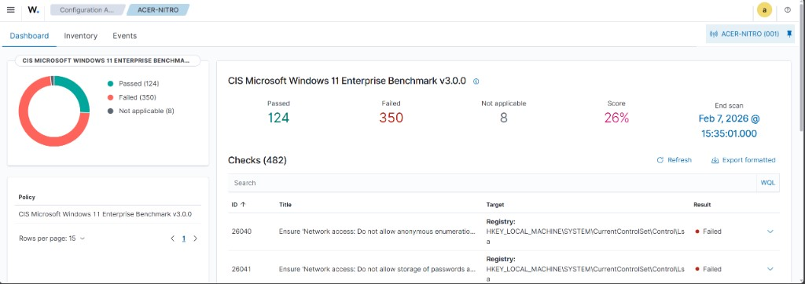
Wazuh
SIEM
Cybersecurity Analyst · Software Developer · AI Solutions Developer
AI Solutions · Cybersecurity · Full-Stack Engineering · Certifications
B.S. Computer Information Systems & Cybersecurity · California State University, Chico · 2026
This page documents applied AI, cybersecurity, and software engineering work — from production-deployed full-stack applications and hands-on InfoSec operations to competitive cybersecurity and AI development on AWS. Credentials include CompTIA Security+ (ce), Qualys VMDR, and multiple AWS security and AI certifications. Entries are ordered by impact within each section.
Lab
Tools and platforms I use in a local lab for blue-team practice, network visibility, forensics, and vulnerability assessment. Layout below is a simple dashboard-style overview.

SIEM
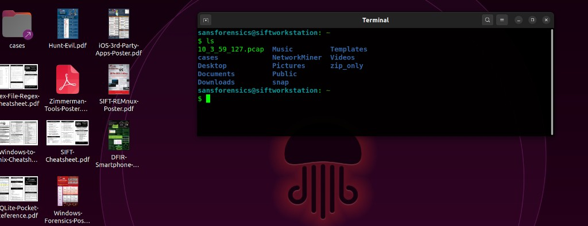
Network forensics
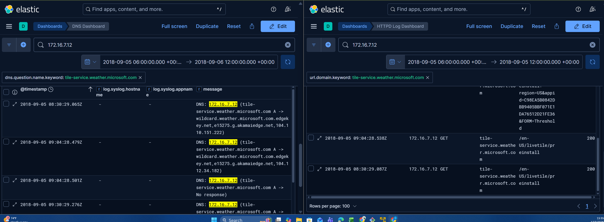
Network forensics / visualization
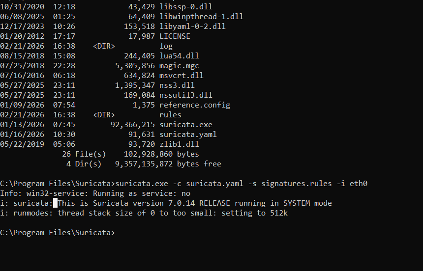
IDS / IPS
Host & disk analysis
Vulnerability scanner
Highlights
Selected work across AI, cybersecurity, and full-stack development, ordered by relevance and impact.
Abstract. Researchers faced inefficient navigation and "clickrage" on dense university web pages. We built a Streamlit-based assistant using RAG on AWS to deliver contextual answers and safer model behavior.
During the Cal Poly DXHub AI Summer Camp, my team and I developed a solution to help Humboldt University’s research department navigate their website more efficiently, addressing issues of clickrage caused by multiple links on a single page. We designed a responsive interface using Streamlit and CSS, paired with a modern UI/UX that incorporated custom colors inspired by the Humboldt University website.
To enhance functionality, we implemented Retrieval Augmented Generation (RAG) for dynamic content generation and leveraged Amazon Bedrock for its RetrieveAndGenerate feature. Data was stored in Amazon S3 Buckets and indexed with an S3 vector database, while Amazon Knowledge Base features and a Semantic Chunking Strategy improved information retrieval and contextual understanding. For advanced Natural Language Processing (NLP), we used Titan V2 Embeddings and Claude Sonnet, supported by System Prompt Engineering to optimize AI model outputs. For security, we implemented Guardrails to monitor and control AI behavior, ensuring safe, accurate and reliable interactions.
Throughout the project, we documented our progress in GitHub, ensuring proper version control and adherence to good development practices. Greatest of all we experienced was the privilege of meeting and collaborating with excellent students from across the CSU system, each bringing unique professional backgrounds. Together, we built powerful AI solutions that addressed real-world problems. Huge thanks to Ryan Matteson, Nick Osterbur, Darren Kraker, and all the other admins for creating such a transformative summer camp that made a lasting impact on everyone who participated.
Key contributions
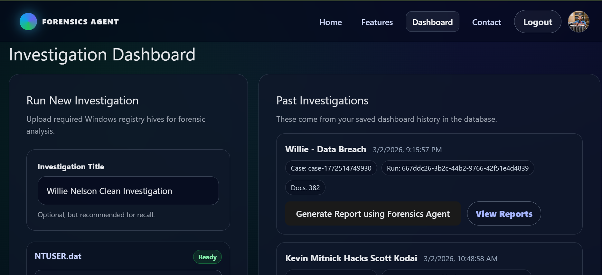
Abstract. Analysts lose time manually extracting and correlating artifacts from forensic acquisitions. This Capstone project delivers a full-stack platform that automates artifact extraction, stores parsed data in AWS S3, and deploys an AI agent with RAG to generate investigation timelines, detailed reports, and context-aware answers to analyst queries.
For my Computer Information Systems Capstone project, I am developing a full-stack web application designed to streamline digital forensic investigations. The platform automates the extraction and parsing of artifacts from forensic acquisitions, enabling analysts to quickly surface relevant evidence.
Parsed data is securely stored in an AWS S3 bucket and leveraged to power an AI-driven analysis agent capable of generating detailed timelines and investigative reports. The application also includes an AI chatbot that uses Retrieval-Augmented Generation (RAG) to answer analyst queries and provide context-aware insights based on the collected artifacts.
This project integrates AWS cloud services, automation, and modern AI techniques to enhance the speed, accuracy, and accessibility of forensic analysis workflows.
Key contributions
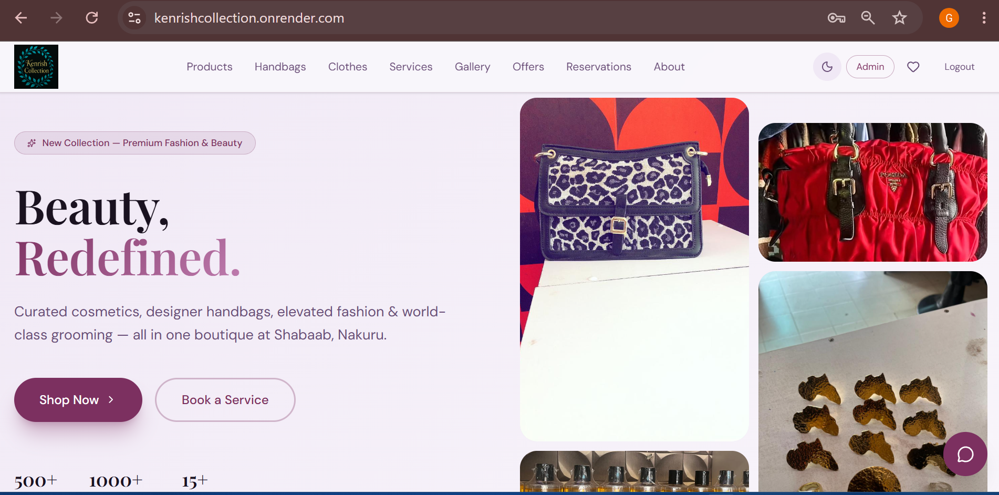
Abstract. Boutique retail businesses need a single platform to track inventory, record sales, and answer customer questions without manual spreadsheets. Kenrish Collection is a responsive full-stack IMS that gives store administrators real-time visibility into stock, pricing, and financials. It also includes a RAG chatbot powered by OpenRouter models to answer customer questions about products and services.
Kenrish Collection is a responsive, full-stack Inventory Management System (IMS) designed for boutique retail businesses specializing in cosmetics, apparel, and fashion accessories. The platform streamlines back-office workflows by giving store administrators real-time visibility into stock levels, operational costs, product pricing, and financial health.
Core admin features include real-time inventory tracking across diverse product categories with automated low-stock warnings, a Dynamic Valuation Engine that calculates total inventory value per item based on real-time cost vs. retail pricing, and integrated stock and sales management modules for updating wholesale costs, adjusting consumer pricing, and recording transactions. A historical Ledger and Revenue Logging database is linked to point-of-sale workflows for accurate profit margin calculation and financial reporting.
The platform includes a Retrieval-Augmented Generation (RAG) chatbot controlled by a model harness using OpenRouter models. It uses NLP to answer customer questions about services and products offered by the business. Authentication is secured via JWT tokens, and the UI supports dark and light mode with a clean, mobile-friendly tabbed dashboard built for quick navigation and rapid data entry on the retail floor.
Key contributions
Screenshots
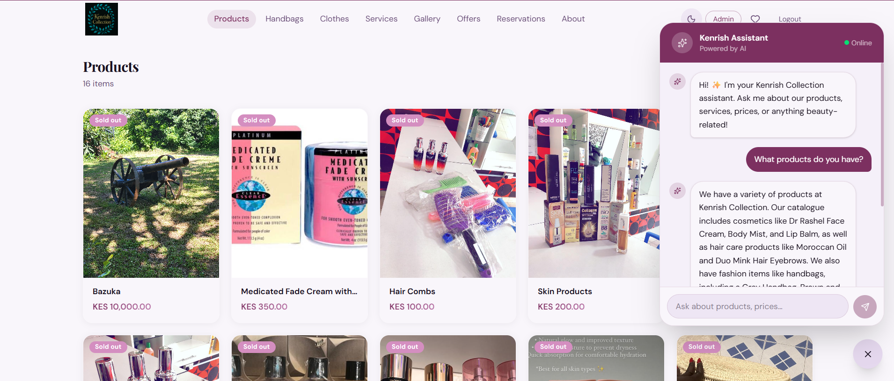
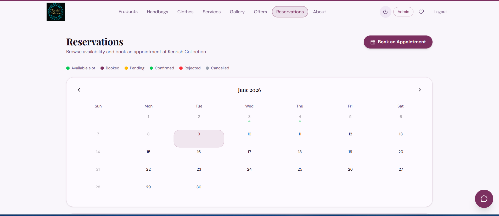
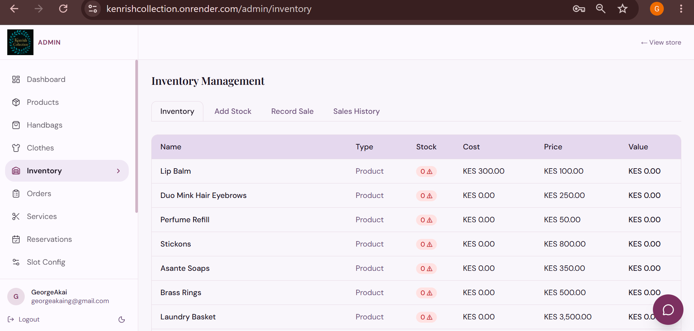

Abstract. Competitive cybersecurity challenges required rapid application of offensive and analytical skills across domains from OSINT to password recovery, strengthening practical red-team thinking.
During my participation in the National Cyber League, I tackled a wide range of cybersecurity challenges that tested both technical skill and problem-solving ability. I began with OSINT investigations uncovering publicly available information. From there, I moved into cryptography, applying encryption and decryption techniques to solve complex puzzles or crack encrypted passwords. I also analyzed network traffic to identify anomalies and potential vulnerabilities, while system enumeration exercises taught me how to detect open ports, services, and exploitable configurations. Finally, I engaged in password cracking, working with hashed data to retrieve flags and gain deeper insight into real-world attack scenarios. Together, these experiences strengthened my ability to think critically, adapt quickly, and apply red-team cybersecurity principles in practical contexts.
Abstract. The program established core analyst competencies (frameworks, SOC-style workflows, traffic and vulnerability tooling, and automation) aligned with operational security roles.
Through the Google Cybersecurity Certificate program, I built a strong foundation in security principles, including the CIA triad and the NIST Cybersecurity Framework. I gained hands-on experience working with Linux and SQL, while also learning SOC workflows to understand how security operations are managed in real-world environments. Using Wireshark, I learned to analyze network traffic and identify potential threats, and with Suricata I conducted vulnerability assessments while applying risk and asset management strategies. I also explored security automation by writing Python scripts to streamline repetitive tasks, and studied the importance of playbooks in guiding effective incident response. Beyond the technical skills, the program emphasized how to make an immediate impact as a cybersecurity analyst, integrating seamlessly into a team and contributing from the very first day on the job.
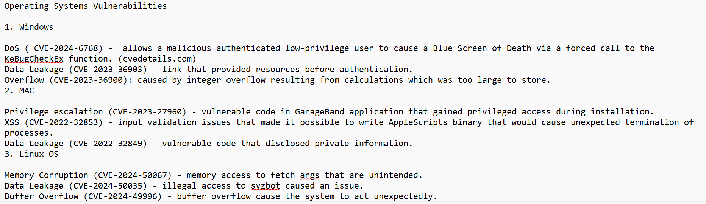
Abstract. Enterprise security operations require coordinated vulnerability management, access control, compliance communications, and proactive threat monitoring. I supported the full InfoSec operations cycle across the campus — from Qualys VMDR reporting and RBAC access reviews to DMARC compliance and CISA advisory monitoring — improving vulnerability remediation efficiency by 15%.
Working in the Chico State Information Security Office, I supported a broad range of security operations under the direction of the CISSP-qualified Information Security Officer and in close collaboration with the Risk Management Officer.
For vulnerability management, I generated and analyzed Qualys VMDR vulnerability reports, tracked remediation progress, and coordinated follow-up with campus departments on patching compliance and end-of-life servers — improving team efficiency by 15% and reducing outstanding high-risk vulnerabilities. I also supported incident-remediation discussions and documented next steps in the CMDB, enabling faster resolution of campus security concerns by 15%.
For identity and access management, I led annual user access reviews to validate RBAC permissions across campus applications and data systems in all departments, ensuring proper access control and reducing unauthorized access risk. I managed ticket workflows in collaboration with campus MPPs and distributed certification requests via Adobe Sign.
For compliance and awareness, I authored knowledge-base and procedural documentation for the annual sensitive data inventory survey. I prepared DMARC email-conformance communications for technical, managerial, and non-technical stakeholders, and tracked security-awareness training completion via CSU Learn, coordinating follow-up with users and improving campus-wide participation.
For threat intelligence, I monitored CISA advisories, CVEs, and indicators of compromise to support proactive threat detection, enabling early identification of potential threats and faster response.
Key contributions
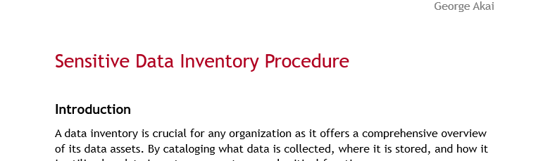
Abstract. Departments needed clear guidance to complete the Sensitive Data Inventory Survey and protect classified data. A published KnowledgeBase article standardized instructions and reinforced policy alignment.
While working in the Information Security Department, I was assigned to create a KnowledgeBase article that would guide Chico State departments in preparing for the annual Sensitive Data Inventory Survey. I authored the article, which was published in the ISEC documentation on the school’s support page, ensuring that departments had clear instructions and resources to complete the survey effectively. The article emphasized the importance of protecting Level 1 data (CSU’s classification for highly sensitive information) and promoted compliance awareness by explaining how the survey supported adherence to CSU policy. In doing so, I contributed to broader security initiatives by providing clear documentation and communication that reinforced the university’s commitment to data protection and compliance.
Abstract. A campus-wide PC-as-a-Service rollout required imaging, configuring, and deploying 300+ Windows 11 machines across labs and offices on a tight timeline. I managed the full workflow from ticket tracking through end-user onboarding and e-waste retirement — completing the rollout two weeks ahead of schedule.
As a Computer Deployment Technician with IT Support Services at Chico State, I was responsible for the campus PC-as-a-Service rollout — deploying, imaging, and configuring over 300 Windows 11 PCs across campus labs and offices using Microsoft Deployment Toolkit (MDT).
I managed deployment tickets and workflow documentation in Team Dynamix, ensuring all tickets were resolved within service-level agreements. After machines were deployed and users connected to their accounts, I supported end-user needs and service delivery — improving service delivery by 20%. I also followed Chico State e-waste procedures to retire legacy equipment safely, achieving full compliance with university environmental policies.
Key contributions
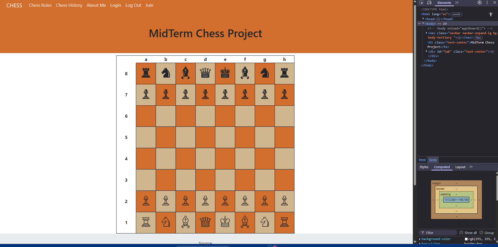
Abstract. The project compared Django-centric request handling to more client-heavy stacks by implementing a playable chess board with synchronized front-end interaction and authenticated user flows.
As part of a software development class midterm project, my team and I set out to build a fully functional chess game board using Django. The goal was to explore how Django handles backend requests compared to other stacks that rely more heavily on client-side rendering. On the frontend, we designed templates with Bootstrap, CSS, HTML, JavaScript, and JQuery, ensuring a responsive and visually appealing interface. The backend was powered by Django and a SQLite3 database, where we implemented models, views, and URLs to render the board accurately. These models provided the foundation of the project, while the views acted as handlers that connected templates and URLs seamlessly. Movement of chess pieces was achieved through a combination of JavaScript and Django backend requests, allowing for dynamic interaction across the board. To safeguard user accounts, we applied security best practices for form validation, signup, login, and logout functionality. Finally, we documented our progress and maintained version control using GitHub, reinforcing good development practices. This project was both challenging and rewarding, offering hands-on experience in blending frontend design with backend logic while building something fun and interactive.
Key contributions (summary)
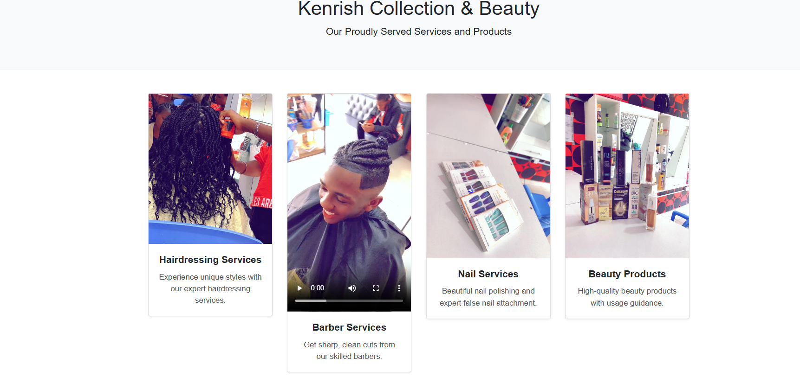
Abstract. A small business required broader visibility and a responsive storefront. An early Node/Express implementation delivered mobile-first layout, modern UI patterns, and encrypted credentials for accounts.
For this project, I set out to build a web application for my sister’s cosmetics and beauty shop, aiming to solve the challenge of visibility and give her business a stronger online presence. The goal was to make her products and services easily accessible to customers through both mobile devices and computers. I designed the site with a responsive, mobile-first approach using HTML, CSS, and Bootstrap, with a Node.js and Express.js backend, ensuring that the layout adapted seamlessly across different screen sizes. To enhance the user experience, I implemented a modern UI/UX with a custom color palette and smooth navigation, creating an inviting and intuitive interface. The platform showcased her offerings clearly, while also incorporating security measures such as password encryption to protect user accounts. This early Node.js version of the Kenrish Collection website laid the foundation for a secure, user-friendly digital storefront that brought her business into the spotlight.
Research & applied AI
Includes ongoing work in AI-assisted forensics and the Humboldt Helpers project (also listed above under Featured work: The Humboldt Helpers).
The Forensics Agent Capstone project is documented in full under Featured work above.
Security operations & practice
Complete problem statements, methodologies, and outcomes for the National Cyber League, Google Cybersecurity Certificate program, and the Information Security Analyst Assistant role are documented in Featured work above.
Credential highlight
CompTIA Security+ (Continuing Education) complements this experience by validating baseline mastery of threats, vulnerabilities, identity and access, architecture, operations, and governance, aligned with entry-level security analyst and SOC-adjacent roles. The official certificate PDF is linked in Certifications below.
Engineering
Full project narratives for Kenrish Collection (React + Django IMS), Kenrish Collection (Node.js early version), and the Chess Javascript App appear in Featured work above.
Documentation
The KnowledgeBase article for the Sensitive Data Inventory Survey (authored for Chico State Information Security, published in ISEC documentation) is presented in full in Featured work above under Information Security: KnowledgeBase Article Write & Review.
Credentials

CompTIA Security+ is a vendor-neutral, ISO/ANSI-accredited certification that confirms foundational cybersecurity skills across threats, attacks, and vulnerabilities; architecture and design; implementation; operations and incident response; and governance, risk, and compliance. The Continuing Education (ce) program maintains the credential through ongoing professional development, supporting readiness for analyst-facing roles and reinforcing the hands-on experience documented elsewhere in this portfolio (competition, coursework, and institutional security work).

2023-2024 · Google / Coursera
Fall 2024
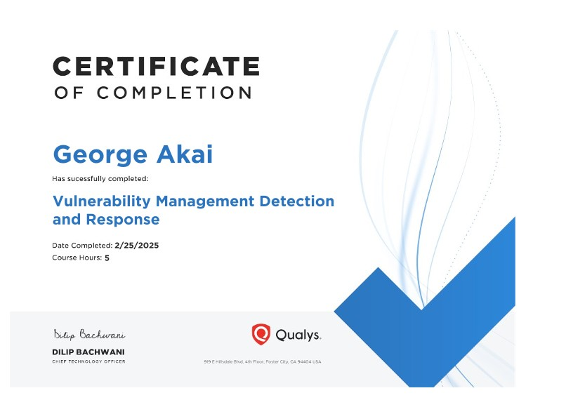
2025 · Qualys
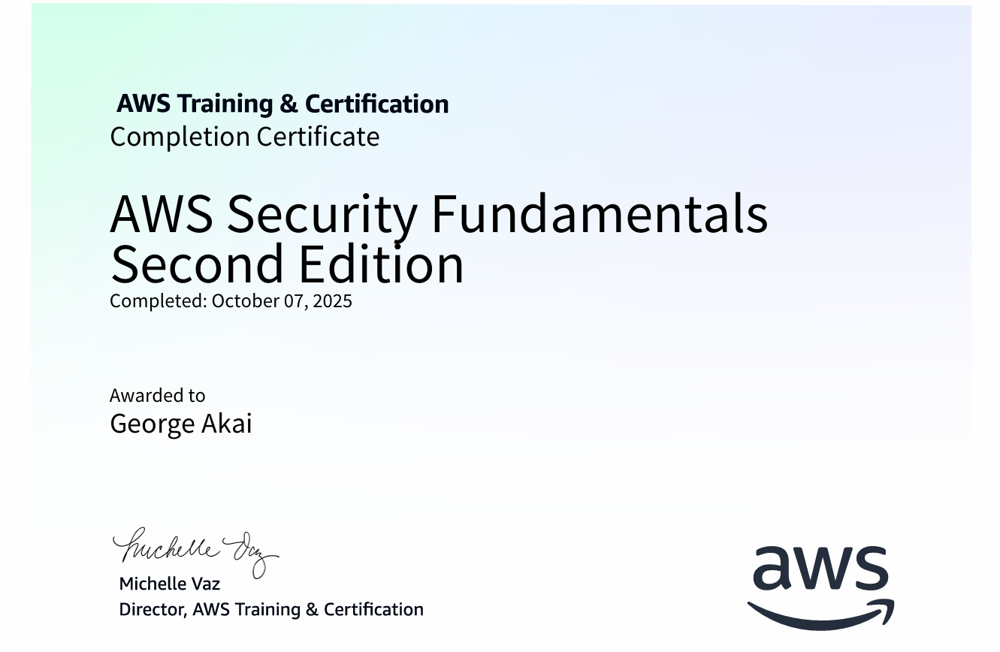
2025 · Amazon Web Services

2025 · Amazon Web Services

2025 · Amazon Web Services